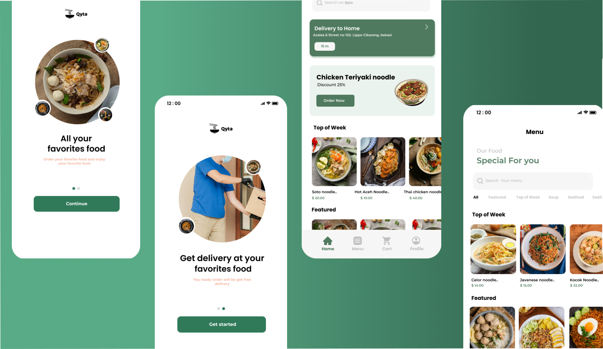

Qyta is a food delivery app design that I built from scratch in Figma as part of a school project. The goal was to design a modern, user-friendly interface that feels warm and intuitive — not just another generic food app. The design includes everything from browsing restaurants to placing an order, with a focus on clarity and a smooth user journey.
Building a food delivery interface is tricky because there's so much information to fit in — menus, prices, delivery times, special offers — without overwhelming the user. I had to carefully decide what to show and what to hide, and make sure the most important actions (like adding to cart or checking out) are always easy to find.
I designed a set of mobile screens that feel like a real app. The home screen highlights weekly specials and featured items, the menu is organized by category, and the cart screen gives a clear summary of the order. Every screen is built around the idea of making food ordering feel effortless — even for first-time users.
Interactive Figma prototype — click around to explore the design
Working on Qyta reminded me that good design isn't just about making things look beautiful — it's about making things work well for real people. I spent a lot of time thinking about how users would actually interact with the app: where their eyes would go first, what they'd tap, and what information they'd need at each step. I also learned a lot about Figma's prototyping features, which helped me bring the design to life and test the flow before writing any code. This school project really deepened my appreciation for thoughtful, human-centered design.